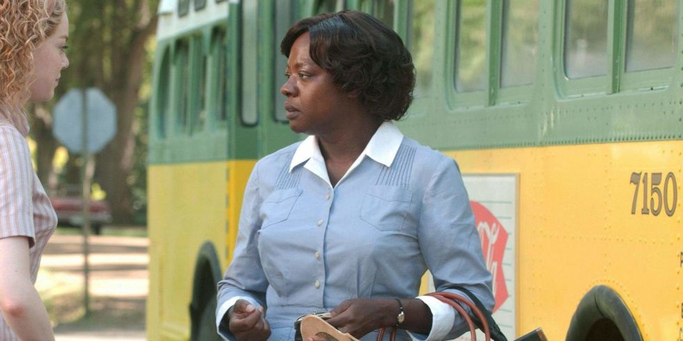
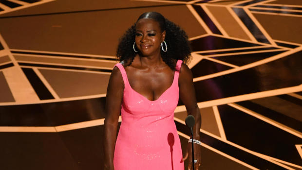
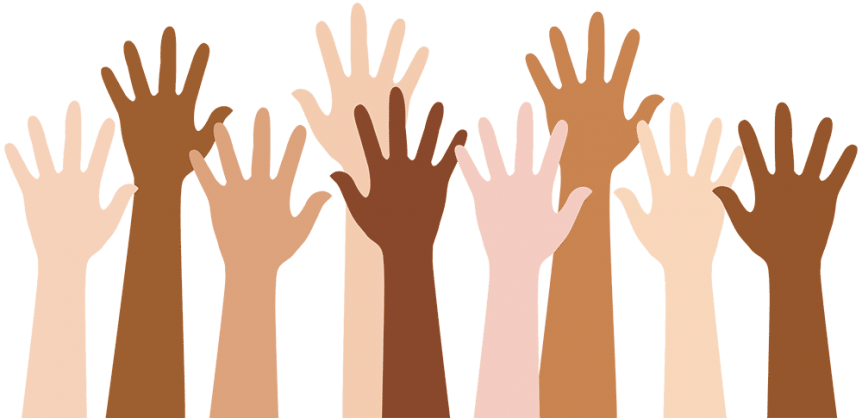

This incredible woman's career has held so many social injustices. Sexual assault is only one of them. Verbal abuse by powerful men and women is another. Racial misunderstanding is a main one in the Hollywood industry. Davis revealed that often she dislikes "how black women are depicted" in many of her characters she has to play. She feels as if this slight misunderstanding falls into the category of discrimination.
viola davis is recognized as one of the greatest actresses of all time. she is known for playing strong female leads, and being an inspiration to all women. in the image below, viola davis plays the lead role in The Help. the movie, based on the best-selling novel, is about a crew of black women and white women who share a rivalry upon discrimination. skeeter, played by emma stone, is in between them both, trying to make peace and equality by interviewing and writing about the black women, or the help. viola davis, who stars as aibileen, does an extraordinary job of capturing the pure racial abuse that many women endured in the 1960s.

viola herself has experienced sexual assault outside of hollywood as well. the actress told ET live that "26 cards drove by with men in them who solicited me, harassed me, yelled at me, verbally abused me...had baby seats in the back." Over the course of her career, Davis has been verbally and sexually abused. She states that many of her and other black women’s stories are not as valued or recognized because of the color of their skin.

